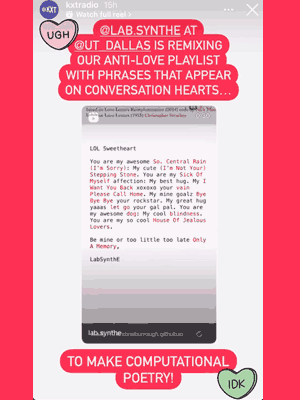
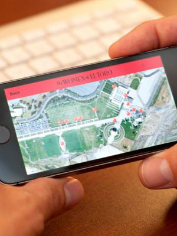
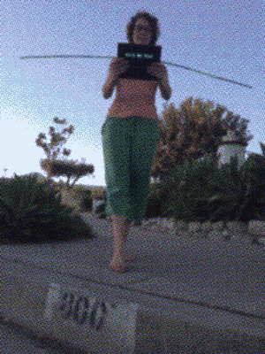
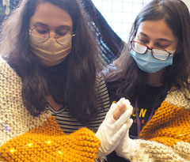
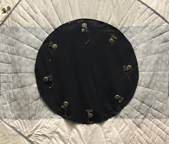
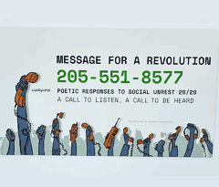

Code to Remix & Reframe
Web projects, net.art & Apps

Dallas AURORA VAN 2024 and ELO 2025 Exhibition and Vectors Media Festival, Toronto.

Created for Hack-the-Planet, exhibited in Dallas AUORA VAN and Ivester Gallery, Austin 2024.

Created with Cal Humanities Community Stories Grant to poetically pair oral histories spoken by women who once lived on the El Toro Airbase to sites on the same land, remade as The OC Great Park

An app that transforms your view to high above the ground and a line or “wire” beneath you. Developed in XCode, this project is retired.
social interactions
Interactive Art, Participatory Art & Feminist Practices Mediated by Technology

An intimate interaction exploring self-regulatory nervous system responses. Two participants wear an electronically enhanced knitted shawl that monitors their heartbeats as they synced through the experience of togetherness. Digital Frontiers (Austin 2019), NYU Bobst Library Mamdouha Gallery (2021-22), The Other Art Fair (Dallas 2024)
Interventionist hack of Starship delivery robots at UT Dallas in which the robots themselves protest their complicity in inaccessibile practices.

Participatory quilt block for the AIDS Quilt Memorial, led by Leticia Ferreira with LabSynthE

This fourth version of One Breath Poem pivots to an interaction that takes place on the cell phone in response to the COVID-19 pandemic and widespread social unrest in 2020.